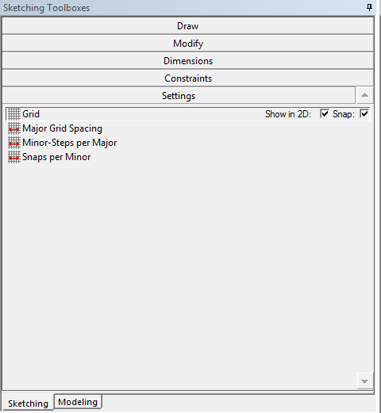
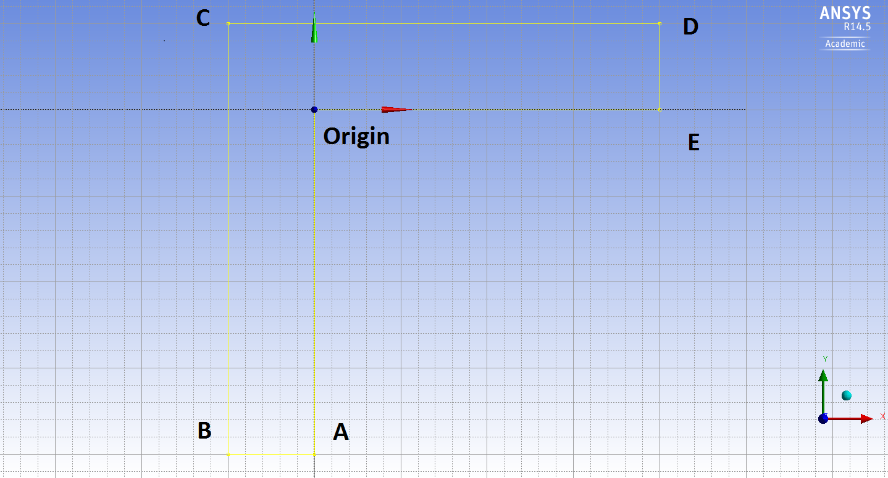

|
|
Composite GeometryComputational Science and Engineering |
Contents
Complicated Geometry (in 2D)Today, we will create a complex 2D part and explore the basic mechanism of generating composite geometries in ANSYS Fluent.
|
Displaying a Grid¶You can choose to display a grid to help you make sketches.
In the Graphics window, the solid lines are major grids, and the dash lines are minor grids.
After checking the 
|
Making Composite Geometries¶However complex they are, composite geometries are made up of a series of basic elements such as straight lines and curves. The technique is to mark the borders of the geometry, and then fill space enclosed by these borders.
 You should see something like the figure above. Delete the surface and the sketch for the next practice.
You can create other $2D$ geometries which you find interesting using other drawing tools available. |
Making Geometries with Holes¶Sometimes problems arise such that you need to create a hollow space within a fluid body. For example if you want to simulate external flow past a cylinder. Usually we don’t need to explicitly model the obstruction, unless there is something interesting about it, such as heat generation. Instead, we exclude the obstruction from the geometry.
Note: In ANSYS, all drawings contribute to a single sketch unless you create a new sketch by clicking
The final step in using a CFD solver application is postprocessing: visualization and statistics which reveal the validity and predictions of the model. Visualization includes taking slices through the control volume and plotting key variables, as well as plotting 2D or 3D isosurfaces. This laboratory exercise will introduce you to the framework of visualization in Fluent. Since the focus in this case is on postprocessing, not problem preparation or execution, we provide the working files for the postprocessing to utilize. |
Credits
Sparsh Chadha, Neal Davis, and Zhongzhong Zhang developed these materials for Computational Science and Engineering at the University of Illinois at Urbana–Champaign.
 This content is available under a Creative Commons Attribution-NonCommercial 4.0 Unported License.
This content is available under a Creative Commons Attribution-NonCommercial 4.0 Unported License.